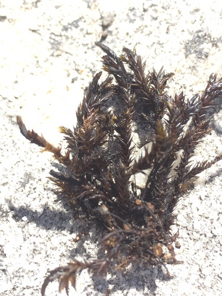

Wardiaceae
(Wardia Moss Family - informal)
Wardiaceae is a monotypic family endemic to southern Africa, containing only Wardia hygrometrica. This robust aquatic moss grows attached to rocks in streams and is highly distinctive due to its stiff, often 3-ranked leaves with broad sheathing bases and strong costae, and its immersed, gymnostomous (lacking peristome) capsules on very short setae.
Overview
The Wardiaceae family is a unique and geographically restricted group represented by a single species, Wardia hygrometrica. This moss is endemic to southern Africa (South Africa and Lesotho), where it is specialized for an aquatic lifestyle, growing firmly attached to rocks in the beds of clear, cool, flowing streams and rivers, often in mountainous areas. It typically forms dense, robust tufts or mats that can withstand strong currents.
Morphologically, Wardia is striking. The plants are stiff and wiry, usually dark green to blackish. The leaves are particularly distinctive, often arranged in three clear ranks (tristichous) along the stem, and possessing broad, pale, sheathing bases that clasp the stem before abruptly narrowing into the main leaf blade. The costa (midrib) is very strong. The sporophytes are also unique, with capsules that remain immersed amongst the upper leaves due to an extremely short seta, and they lack a peristome (teeth around the capsule mouth).
Due to its combination of aquatic habit, tristichous leaves, acrocarpous nature (though sometimes appearing pleurocarpous due to branching), and reduced sporophyte, the phylogenetic placement of Wardiaceae has been difficult. It is often placed in its own order, Wardiales, reflecting its isolated evolutionary position.
Quick Facts
- Scientific Name: Wardiaceae
- Common Name: (Wardia Moss Family - informal)
- Number of Genera: 1 (Wardia)
- Number of Species: 1 (Wardia hygrometrica)
- Distribution: Southern Africa (South Africa, Lesotho).
- Evolutionary Group: Bryophytes - Bryopsida (True Mosses) - Order uncertain (often Wardiales).
Key Characteristics
Wardiaceae possesses a unique suite of characteristics related to its aquatic lifestyle and evolutionary history.
Gametophyte Form and Habit
The gametophyte generation is robust and adapted to flowing water:
- Habit: Plants robust, stiff, forming dense tufts or mats on submerged rocks.
- Size: Stems erect or ascending, often stout, typically 1-5 cm long.
- Color: Dark green, brownish-green, or blackish.
- Stems: Relatively thick, branching variable. Central strand present. Attached by rhizoids at the base.
- Substrate: Exclusively on rock in clear, flowing streams or rivers.
Leaves (Phyllids)
Leaves are highly distinctive in arrangement and structure:
- Arrangement & Shape: Crowded, stiffly erect-spreading, characteristically arranged in 3 distinct ranks (tristichous). Leaves broadly ovate to oblong-lanceolate, abruptly narrowed above a conspicuous, broad, pale, sheathing base that clasps the stem. Apex is typically obtuse or rounded, sometimes apiculate.
- Costa (Midrib): Very strong, broad, single, ending just below the apex (subpercurrent) or reaching it (percurrent).
- Margins: Entire or sometimes finely crenulate (scalloped) near the apex.
- Cells: Upper laminal cells small, thick-walled, irregularly quadrate, hexagonal, or shortly rectangular, often obscure. Basal cells in the sheathing base larger, rectangular, paler, and thinner-walled. Alar cells not differentiated.
Reproductive Structures
- Sexual Condition: Dioicous (separate male and female plants).
- Archegonia: Terminal on stems or branches, surrounded by perichaetial leaves that are similar to vegetative leaves but often larger and more strongly sheathing.
- Antheridia: Terminal in bud-like perigonia on male plants.
Sporophyte
The sporophyte is reduced and remains immersed within the leaves:
- Seta: Extremely short (often < 0.5 mm), making the capsule appear sessile or subsessile and immersed among the perichaetial leaves.
- Capsule: Erect and symmetric, small, broadly ovate when immature, becoming cup-shaped (cyathiform) or hemispherical and wide-mouthed after the operculum falls. Thin-walled.
- Operculum: Small, flat or low-conical, often with a small central point (apiculus).
- Peristome: Characteristically absent (gymnostomous).
- Calyptra: Small, mitrate (conical) or cucullate (hood-shaped), covering only the operculum, falling very early (fugacious).
Spores
Spores are relatively large, spherical, and papillose.
Chemical Characteristics
No specific chemical characteristics are widely noted, though likely possesses adaptations for submerged life.
Field Identification
Identifying Wardiaceae relies on its specific habitat, geographic location, robust nature, and unique leaf and sporophyte characteristics.
Primary Identification Features (Hand Lens Level)
- Habitat & Location: Critical – found only on submerged rocks in streams in southern Africa (South Africa, Lesotho).
- Robust, Stiff, Dark Plants: Look for dense, dark green to blackish tufts firmly attached to rocks in flowing water.
- Tristichous Leaves: Observe the distinct arrangement of leaves in three rows along the stem (may require careful observation or pulling off leaves).
- Sheathing Leaf Base: Note the broad, pale base of the leaf that clasps the stem before narrowing into the main blade.
- Immersed Capsules: If sporophytes are present, look for small, cup-shaped (when open) capsules nestled deep within the upper leaves, lacking a visible stalk or peristome teeth.
- Strong Costa: The broad midrib is usually evident.
Secondary Identification Features
- Broad Leaf Apex: Leaf tips are typically rounded or broadly pointed, not finely tapered.
- Stiff Texture: Plants feel rigid or wiry.
Seasonal Identification Tips
- Year-Round: Gametophytes are perennial and identifiable by habitat, location, and vegetative features.
- Variable: Sporophytes may mature seasonally, but their immersed nature makes them less conspicuous than in many other mosses.
Common Confusion Points
Distinguishing Wardia from other aquatic mosses in its range:
- Fontinalaceae (Fontinalis): Also aquatic, often 3-ranked, but leaves usually lack a costa or have a weak one, are often keeled, lack the broad sheathing base of Wardia, and have exserted capsules with double peristomes.
- Scouleriaceae (Scouleria - Not in S. Africa): Similar robust habit, but capsules are on distinct short setae and have a single peristome. Different distribution.
- Grimmiaceae / Amblystegiaceae / Brachytheciaceae: Various aquatic or riparian mosses occur in southern Africa, but differ significantly in leaf arrangement (rarely strictly tristichous), leaf shape (often narrower, pointed), costa structure, cell details, capsule position (usually exserted), and peristome presence/structure.
Field Guide Quick Reference
Look For:
- Habitat: Rocks in streams (Southern Africa ONLY)
- Robust, stiff, dark plants
- Leaves often 3-ranked (tristichous)
- Broad sheathing leaf base
- Strong, broad costa
- Capsules immersed, gymnostomous (no peristome)
Key Distinctions:
- vs. Fontinalis: Costa (strong vs. absent/weak), leaf base, peristome, capsule position.
- vs. Other Aquatic Mosses: Combination of 3-ranked leaves, sheathing base, strong costa, immersed gymnostomous capsule, and location.
Notable Examples
The family Wardiaceae is monotypic, containing only one species.

Wardia hygrometrica
(Wardia Moss)
The sole species in the family, endemic to southern Africa. It is a robust aquatic moss recognized by its stiff stems with often tristichous leaves having broad sheathing bases and strong costae. It grows on rocks in streams and has unique immersed, gymnostomous capsules.
Phylogeny and Classification
Wardiaceae is classified within the class Bryopsida. Its phylogenetic position is highly uncertain and has been the subject of much discussion due to its unique combination of morphological traits.
Because of its distinctive features, particularly the tristichous leaves, sheathing leaf bases, immersed gymnostomous capsules, and aquatic habit, it is often placed in its own monotypic order, Wardiales. This highlights its evolutionary isolation.
Historically, comparisons were made with Fontinalales (due to the aquatic habit and sometimes tristichous leaves, though peristome and other features differ greatly – likely convergent evolution) or with groups possessing a single peristome like Dicranales or Pottiales (based on some interpretations of cellular structure, though Wardia lacks a peristome). Molecular studies have generally supported its isolation, placing it distant from Fontinalaceae and not clearly resolving its relationship to other major acrocarpous or pleurocarpous lineages. It remains an enigmatic family within moss phylogeny.
Position in Plant Phylogeny
- Kingdom: Plantae
- Clade: Embryophyta (Land Plants)
- Division: Bryophyta (Mosses)
- Class: Bryopsida
- Order: Wardiales (often) / Placement Highly Uncertain
- Family: Wardiaceae
Evolutionary Significance
Wardiaceae is significant for several evolutionary reasons:
- Aquatic Specialization: Represents a unique evolutionary pathway for adaptation to a rheophilic (fast-flowing water) environment within mosses.
- Unique Morphology: The combination of tristichous leaves with sheathing bases, strong costa, and immersed gymnostomous capsules is unparalleled.
- Endemism: Its restriction to southern Africa points to specific biogeographic history and potentially relictual status.
- Phylogenetic Isolation: Its uncertain position highlights the diversity of evolutionary trajectories within Bryopsida and the existence of potentially ancient, isolated lineages.